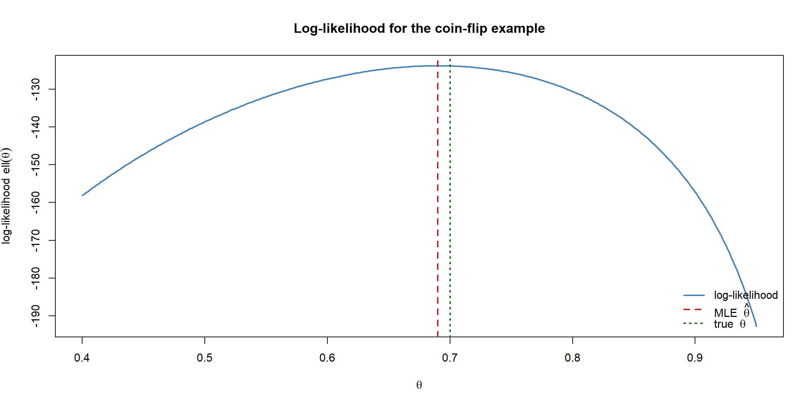

flowchart LR L["Likelihood<br/>L(θ)"] --> LL["Log-likelihood<br/>ℓ(θ)"] LL -->|"differentiate"| S["Score<br/>U(θ) = ℓ'(θ)"] S -->|"set = 0 and solve"| MLE["MLE<br/>θ̂"] LL -->|"second derivative"| I["Information<br/>curvature of ℓ"] I -->|"1 / √I"| SE["Standard error<br/>of θ̂"]
Likelihood, Score and Fisher Information
On the previous page we said statistics is the inverse problem: given data, recover the model. The likelihood function is the precise mathematical tool that lets us do this. Everything in frequentist parametric inference — estimates, standard errors, confidence intervals, tests — flows from it.
This page builds the chain of ideas step by step:
\[ \text{likelihood} \;\to\; \text{log-likelihood} \;\to\; \text{score} \;\to\; \text{MLE} \;\to\; \text{Fisher information} \;\to\; \text{standard error}. \]
The likelihood function
Suppose our data \(x_1, \dots, x_n\) are modelled as coming from a distribution with probability (mass or density) function \(f(x \mid \theta)\), where \(\theta\) is the unknown parameter we want to recover. Another way of looking at this is that we have a family of distributions \(\{f(x \mid \theta) : \theta \in \Theta\}\), and we want to find the member of that family that best explains the data we actually observed. (Throughout, we assume the observations are independent and identically distributed, written \(X_1, \dots, X_n \sim^{iid} f(\cdot \mid \theta)\) — drawn separately from the same distribution.)
For a fixed value of \(\theta\), the probability of seeing this particular data set (assuming the observations are independent) is
\[ f(x_1, \dots, x_n \mid \theta) = \prod_{i=1}^{n} f(x_i \mid \theta). \]
The key move is to flip what we treat as variable. The data is already observed and fixed; the parameter is what we do not know. So we read the same expression as a function of \(\theta\):
\[ \boxed{\,L(\theta) = \prod_{i=1}^{n} f(x_i \mid \theta)\,} \]
ImportantLikelihood is not probability
\(L(\theta)\) has the same formula as a probability, but it is not a probability distribution over \(\theta\). We are not saying “\(\theta\) is random.” We are asking: for each candidate value of \(\theta\), how plausibly would it have produced the data we actually saw? It does not integrate to 1 over \(\theta\), and \(\theta\) is still a fixed unknown — exactly the frequentist stance from the previous page.
What it represents: \(L(\theta)\) measures how well each candidate parameter value explains the observed data. A large \(L(\theta)\) means “this \(\theta\) makes the data we saw look unsurprising.” This is precisely the backwards reasoning we wanted: high likelihood points to plausible models.
The log-likelihood
In practice we almost never work with \(L(\theta)\) directly. Instead we take its logarithm:
\[ \boxed{\,\ell(\theta) = \log L(\theta) = \sum_{i=1}^{n} \log f(x_i \mid \theta)\,} \]
We do this for three reasons:
- Products become sums. The \(\prod\) turns into a \(\sum\), which is far easier to differentiate.
- Numerical stability. Multiplying many small probabilities together underflows to zero on a computer; adding their logs does not.
- The maximiser is unchanged. Because \(\log\) is strictly increasing, the \(\theta\) that maximises \(\ell(\theta)\) is exactly the \(\theta\) that maximises \(L(\theta)\). We lose nothing by switching.
What it represents: the same information as the likelihood — how well each \(\theta\) explains the data — but on an additive, well-behaved scale.
The score function
To find the \(\theta\) that best explains the data, we look for the peak of \(\ell(\theta)\). As with any optimisation, we differentiate. The derivative of the log-likelihood with respect to \(\theta\) is called the score function:
\[ \boxed{\,U(\theta) = \frac{\partial \ell(\theta)}{\partial \theta}\,} \]
What it represents: the score is the slope of the log-likelihood. It tells us, at any candidate \(\theta\):
- a positive score means \(\ell\) is still rising — larger \(\theta\) would explain the data better;
- a negative score means we have gone too far — smaller \(\theta\) is better;
- a zero score means we are at a turning point — a candidate for the best explanation.
A useful and important fact is that, when evaluated at the true parameter, the score has mean zero: \[ \mathbb{E}[\,U(\theta)\,] = 0. \] On average the data does not pull the estimate in any particular direction away from the truth — a property we will lean on shortly.
NoteIn a nutshell: why the score averages to zero
At the true \(\theta\) you are already standing on the peak of the curve, on average. A given data set might nudge the slope a little uphill (pushing your estimate higher) or a little downhill (pushing it lower), but it is equally likely to nudge either way. Average over all the data sets the truth could produce and those nudges cancel — so the expected slope is exactly zero.
The maximum likelihood estimate (MLE)
The maximum likelihood estimate, written \(\hat{\theta}\), is the value of \(\theta\) that maximises the likelihood — equivalently, where the score is zero:
\[ \boxed{\,U(\hat{\theta}) = 0\,} \qquad \text{(and } \ell''(\hat{\theta}) < 0 \text{, confirming a maximum).} \]
What it represents: \(\hat{\theta}\) is our single best point estimate — the parameter value that makes the observed data most plausible. It is the frequentist’s answer to “what model produced this data?” Sometimes we can solve \(U(\hat{\theta}) = 0\) by hand; when we cannot, we solve it numerically (for example with the Newton–Raphson method from the Mathematics to Code section).
Fisher information
A point estimate alone is not enough — we also need to know how trustworthy it is. This is where information comes in, and it is the deepest idea on this page.
Look again at the shape of the log-likelihood near its peak:
flowchart LR A["Sharp, narrow peak<br/>large curvature"] --> A2["the data strongly<br/>pins down θ →<br/>HIGH information,<br/>SMALL standard error"] B["Flat, broad peak<br/>small curvature"] --> B2["many θ explain the data<br/>almost equally well →<br/>LOW information,<br/>LARGE standard error"]
The curvature of the log-likelihood at its peak — how sharply it bends — measures how much the data tells us about \(\theta\). Curvature is the second derivative, so we define:
Observed information
\[ \boxed{\,J(\theta) = -\frac{\partial^2 \ell(\theta)}{\partial \theta^2}\,} \]
The minus sign makes \(J\) positive at a maximum (where the second derivative is negative). Evaluated at the MLE, \(J(\hat{\theta})\) is the observed information: the curvature of the log-likelihood for this particular data set.
Expected (Fisher) information
If instead we average the curvature over all data sets the model could produce, we get the expected or Fisher information:
\[ \boxed{\,I(\theta) = \mathbb{E}\!\left[-\frac{\partial^2 \ell(\theta)}{\partial \theta^2}\right] = \mathbb{E}\!\left[\,U(\theta)^2\,\right]\,} \]
The second equality (the variance of the score, since the score has mean zero) is a remarkable identity: the average curvature equals the variability of the slope. Both capture the same thing.
What it represents: Fisher information quantifies how much the data tells us about \(\theta\). High information ⇒ a sharp likelihood peak ⇒ the data strongly constrains \(\theta\) ⇒ a precise estimate. Low information ⇒ a flat peak ⇒ many values of \(\theta\) are nearly as plausible ⇒ an imprecise estimate. Information also adds up across independent observations: \(n\) independent data points carry \(n\) times the information of one, which is exactly why bigger samples give sharper estimates.
Putting it together: from information to a standard error
The reason Fisher information matters so much is the central result of this whole section. For large samples, the MLE is approximately normally distributed:
\[ \hat{\theta} \;\overset{\text{approx.}}{\sim}\; \mathcal{N}\!\left(\theta,\; \frac{1}{I(\theta)}\right). \]
NoteIn a nutshell: these are stated results, not skipped steps
Two facts on this page are presented as results to use, not derived here: the identity \(I(\theta) = \mathbb{E}[U(\theta)^2]\) (curvature equals the variance of the score), and the normal approximation \(\hat\theta \sim \mathcal N(\theta, 1/I(\theta))\). If the proofs feel missing, you have not lost the plot — they are justified on the Asymptotics page (via the Central Limit Theorem). Take them on trust for now.
In words: the MLE is approximately unbiased, and its variance is the reciprocal of the Fisher information. Therefore the standard error of the estimate is
\[ \boxed{\,\operatorname{se}(\hat{\theta}) \approx \frac{1}{\sqrt{I(\hat{\theta})}}\,} \]
This closes the loop:
- more data, or a sharper likelihood, ⇒ more information;
- more information ⇒ smaller standard error;
- smaller standard error ⇒ a more precise estimate and a narrower confidence interval.
An approximate 95% confidence interval follows immediately: \[ \hat{\theta} \pm 1.96 \times \operatorname{se}(\hat{\theta}). \]
More than one parameter: the vector case
WarningPrerequisites — and a safe exit
This section uses vectors, matrices, and the matrix inverse. If you are comfortable with those, read on. If not, you can safely skip to the worked example below — everything in the rest of the course that you need follows from the single-parameter intuition (curvature ⇒ precision) you already have. The matrix version is the same idea wearing bigger clothes, not a new idea.
So far \(\theta\) has been a single number. Most real models have several parameters at once — a Normal has a mean and a variance, a Gamma has a shape and a rate, a regression has a whole vector of coefficients. The good news is that nothing conceptual changes: every object above simply gains a dimension. We now write the parameter as a vector \(\boldsymbol\theta = (\theta_1, \dots, \theta_p)\), and the scalars become vectors and matrices.
flowchart LR S1["Score: a single derivative<br/>U(θ) = ℓ'(θ)"] --> S2["Score vector (gradient):<br/>one partial derivative<br/>per parameter"] I1["Information: a single number<br/>I(θ) = −ℓ''(θ)"] --> I2["Information MATRIX:<br/>all second partials,<br/>p × p"]
The score becomes a gradient vector
Instead of one derivative, we take a partial derivative with respect to each parameter. The score is now a vector — the gradient of the log-likelihood: \[ \mathbf{U}(\boldsymbol\theta) = \begin{pmatrix} \dfrac{\partial \ell}{\partial \theta_1} \\[2mm] \vdots \\[1mm] \dfrac{\partial \ell}{\partial \theta_p} \end{pmatrix}. \] The MLE \(\hat{\boldsymbol\theta}\) is the point where every component is zero simultaneously, \(\mathbf{U}(\hat{\boldsymbol\theta}) = \mathbf{0}\) — a system of \(p\) equations in \(p\) unknowns. This is exactly why multi-parameter models usually need a numerical optimiser: you can rarely solve that system by hand.
The information becomes a matrix
The curvature is no longer a single second derivative but a whole matrix of them — the Hessian of the log-likelihood, averaged: \[ \mathbf{I}(\boldsymbol\theta) = \mathbb{E}\!\left[-\frac{\partial^2 \ell}{\partial \theta_j\, \partial \theta_k}\right]_{j,k=1,\dots,p}. \] The diagonal entries measure how sharply each parameter is pinned down on its own; the off-diagonal entries measure how the parameters’ estimates are correlated — something a one-parameter analysis cannot see. A large off-diagonal means the data struggles to tell two parameters apart (they trade off against each other).
Standard errors come from the inverse matrix
The reciprocal \(1/I\) becomes a matrix inverse. The asymptotic result generalises to a multivariate normal: \[ \hat{\boldsymbol\theta} \;\overset{\text{approx.}}{\sim}\; \mathcal{N}_p\!\left(\boldsymbol\theta,\; \mathbf{I}(\boldsymbol\theta)^{-1}\right). \] The matrix \(\mathbf{V} = \mathbf{I}(\hat{\boldsymbol\theta})^{-1}\) is the variance–covariance matrix of the estimates. Each parameter’s standard error is the square root of the corresponding diagonal entry: \[ \boxed{\,\operatorname{se}(\hat{\theta}_j) \approx \sqrt{\big[\mathbf{I}(\hat{\boldsymbol\theta})^{-1}\big]_{jj}}\,} \]
ImportantInvert first, then take the diagonal
A common mistake is to take \(1/\sqrt{I_{jj}}\) — inverting the diagonal entries directly. That is wrong unless the off-diagonals are zero. You must invert the whole matrix first and only then read off the diagonal, because each parameter’s uncertainty depends on how it is entangled with the others.
In short: score → gradient vector, information → matrix, divide → matrix inverse. Every idea on this page carries over; it just wears bigger clothes. The Simulation page works a full two-parameter example end to end, fitting a Gamma distribution with optim and reading the standard errors off the inverse Hessian exactly as described here.
A worked example in R
Let us make all of this concrete with the simplest possible model: Bernoulli data (coin flips), where each observation is 1 (heads) with probability \(\theta\) and 0 (tails) otherwise.
For a sample with \(k\) heads out of \(n\) flips, the pieces work out neatly by hand:
| Quantity | Formula |
|---|---|
| Log-likelihood | \(\ell(\theta) = k\log\theta + (n-k)\log(1-\theta)\) |
| Score | \(U(\theta) = \dfrac{k}{\theta} - \dfrac{n-k}{1-\theta}\) |
| MLE | \(\hat{\theta} = \dfrac{k}{n}\) (the sample proportion) |
| Fisher information | \(I(\theta) = \dfrac{n}{\theta(1-\theta)}\) |
Now let us verify this numerically. We will simulate some flips and find the MLE both algebraically and by optimising the log-likelihood directly.
Code
```{r}
#| warning: false
#| message: false
set.seed(1)
# Simulate n coin flips with a true (but "unknown") bias
trueTheta <- 0.7
n <- 200
flips <- rbinom(n, size = 1, prob = trueTheta)
k <- sum(flips) # number of heads observed
# The log-likelihood as a function of theta
ll <- function(theta) {
k * log(theta) + (n - k) * log(1 - theta)
}
# 1. MLE by formula: the sample proportion
mle <- k / n
# 2. MLE by numerical optimisation of the log-likelihood
opt <- optimise(ll, interval = c(0.001, 0.999), maximum = TRUE)
mleNum <- opt$maximum
c(trueTheta = trueTheta,
mle = mle,
mleNum = mleNum)
```trueTheta mle mleNum
0.7000000 0.6900000 0.6900061 The algebraic MLE and the numerical maximiser agree, and both land close to the true value of 0.7. Now the Fisher information and the standard error:
Code
```{r}
# Fisher information evaluated at the MLE
info <- n / (mle * (1 - mle))
# Standard error = 1 / sqrt(information)
se <- 1 / sqrt(info)
# Approximate 95% confidence interval
ci95 <- mle + c(-1, 1) * 1.96 * se
list(fisherInfo = info,
se = se,
ci95 = ci95)
```$fisherInfo
[1] 935.0164
$se
[1] 0.03270321
$ci95
[1] 0.6259017 0.7540983Finally, we can see the curvature idea by plotting the log-likelihood. The peak sits at the MLE, and the sharpness of that peak is exactly the Fisher information — the quantity that becomes our standard error.
Code
```{r}
#| fig-align: center
grid <- seq(0.4, 0.95, length.out = 400)
plot(grid, ll(grid), type = "l", lwd = 2,
col = "steelblue",
xlab = expression(theta),
ylab = expression(paste("log-likelihood ", ell(theta))),
main = "Log-likelihood for the coin-flip example")
abline(v = mle, col = "firebrick", lwd = 2, lty = 2)
abline(v = trueTheta, col = "darkgreen", lwd = 2, lty = 3)
legend("bottomright",
legend = c("log-likelihood",
expression(paste("MLE ", hat(theta))),
expression(paste("true ", theta))),
col = c("steelblue", "firebrick", "darkgreen"),
lwd = 2, lty = c(1, 2, 3), bty = "n")
```
Try increasing n in the simulation: the peak becomes sharper, the Fisher information grows, and the standard error shrinks — the data is telling us more and more about \(\theta\), exactly as the theory promises.
TipGoing further 🚀
You rarely have to do the optimisation and the standard errors by hand. Hand a negative log-likelihood to stats4::mle (or the friendlier bbmle::mle2) and you get coef(), vcov(), confint() and a summary() for free:
Code
```{r}
#| eval: false
library(stats4)
nll <- function(theta) -(k * log(theta) + (n - k) * log(1 - theta))
fit <- mle(nll, start = list(theta = 0.5))
vcov(fit) # variance = 1 / information
confint(fit) # profile-likelihood interval, not just Wald
```And when differentiating the log-likelihood twice by hand is painful, let numDeriv::hessian() build the information matrix numerically — no calculus required:
Code
```{r}
#| eval: false
library(numDeriv)
J <- numDeriv::hessian(nll, x = mle) # observed information
solve(J) # variance-covariance matrix
```Summary
| Object | Symbol | What it represents |
|---|---|---|
| Likelihood | \(L(\theta)\) | How well each \(\theta\) explains the observed data |
| Log-likelihood | \(\ell(\theta)\) | The same, on an additive, numerically stable scale |
| Score | \(U(\theta) = \ell'(\theta)\) | The slope of \(\ell\); points toward better \(\theta\) |
| MLE | \(\hat{\theta}\) | The \(\theta\) that best explains the data (\(U(\hat\theta)=0\)) |
| Observed information | \(J(\hat{\theta}) = -\ell''(\hat{\theta})\) | Curvature of \(\ell\) for this data set |
| Fisher information | \(I(\theta) = \mathbb{E}[-\ell''(\theta)]\) | Expected curvature — how much the data tells us about \(\theta\) |
| Standard error | \(1/\sqrt{I(\hat{\theta})}\) | The precision of the estimate |
These six quantities are the engine of frequentist parametric inference. Every estimate, standard error, confidence interval and likelihood-ratio test you meet later is built from exactly this chain.